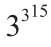

在美国的10年里，爱多士从未放弃过有朝一日回到匈牙利的希望。他关于山姆与乔——爱多士语言对美国与苏联的称呼——行径的观察，使他对这两个大国都不信任。在他居留美国的10年间，爱多士并未采取任何步骤去获得美国公民资格。在那些年代里，爱多士从未想方设法去更换他的学生类签证。因此1948年当他想离开美国到欧洲包括匈牙利旅行时，就碰到了非常头痛的行政麻烦。最后，爱多士总算获得了一张必要的绿卡，这使他能自由地往返美国。
他旅行的第一站是荷兰。在那里他与荷兰的第一流数学家一起就组合论、数论与分析方面的问题进行了合作。在阿姆斯特丹，他碰到了早在布达佩斯就已认识的一个年轻数学家奥尔弗雷德·雷尼（Alfréd Rényi）。在布达佩斯知识分子的小圈子里，爱多士是通过他的父母知道雷尼的，他们与雷尼一家相识多年。在大学里，爱多士的父母听过雷尼的外祖父、哲学家与文学评论家亚历山大（Bernat Alexander）所开设的美学课。雷尼的父亲是一个工程师，他的儿子得到了他家庭所赋予的两方面的才能与兴趣。雷尼是希腊古典语言与哲学的优秀学生，他对天文学也很着迷，这就很自然地引导他去攻读物理，而最终落脚于数学。
1939年，当雷尼高中毕业时，他成了种族歧视法规的受害者。按这一法规，犹太人进入大学的人数受到限制。为此他在甘茨造船厂劳动了半年，直到他在希腊文与数学方面均赢得名次后，他才被允许进入大学。雷尼跟图兰一起学习数学，后来在这一领域中成了名。
1944年毕业后，雷尼被拘留从事强制性劳动。在他所属的一群人被撤到西部之前，他设法逃出了劳动营，并利用假文件住在布达佩斯。按照爱多士的说法，雷尼是一名抵抗运动的英雄，他从箭十字党（Nyilas）——匈牙利的纳粹分子，他们折磨和屠杀了布达佩斯与西部地区成千上万的犹太人——手中救出了许多可能的受害者，为此他曾大胆地用箭十字党的制服来伪装自己。“在那些日子里，无论什么时候遇见他，”图兰写道，“我都对他的镇定自若与机智勇敢感到惊奇。”正是在这样的情况下，雷尼完成了他在塞格德大学的博士学位。这所大学位于离布达佩斯不远的一个镇上，是匈牙利第二大的大学。1946年，雷尼的生活已趋于安定，这使他能前往列宁格勒，在那里平静地工作与研究了8个月之久。图兰写道：“他在这几个月中的进步（这是他一生中第一次可以完全集中精力于数学）是非常惊人的。”他只懂得一点点俄文；却领会了顶尖数论学家维诺格拉多夫与林尼克（Yuni Linnik）工作的实质；掌握了概率论，这将成为他最重要工作的基础；并撰写了一些突破性论文。图兰写道：“靠着坚强的意志，他已从记忆中抹去了战争年代和劳动营苦难生活的阴影，用他年轻旺盛的精力与特殊的理解天赋全力以赴地投身于他的工作。”
在1948年，爱多士遇到雷尼时，雷尼已不再是一个前途有望的学生，而是一个成名的数学家了。他的名声主要来自他对数学中最大名鼎鼎的难题之一哥德巴赫猜想所取得的惊人进展。
1742年，一位名叫哥德巴赫（Christian Goldbach）的德国数学家给欧拉写了一封信，信中提出了一个猜想：每一个大于2的偶数都可以写成两个素数之和，例如：24=19+5及72=19+53。从表面上看，这猜想似乎是足够合理的，并且几乎是显然成立的。总之，每一个偶数都可以用很多不同的方式表示为两个素数之和，而每一个大于2的素数都是奇数。人们很容易会想到去寻找一个反例。但是不管用了多少笔算的与电脑的时间——直到1993年，4×108之内的偶数都已被检验过了——始终未能找出一个反例，也没有人确信可能找到反例。爱多士喜欢指出，实际上，这一猜想已先由笛卡儿比哥德巴赫大约更早100年提出过。“但我认为哥德巴赫猜想的名字仍应保留，”爱多士解释道，表明了他强烈的公正感，“首先，哥德巴赫写给欧拉的信使这一猜想获得了普及。同时，哥德巴赫是那样贫穷，而笛卡儿又是那么富有，这很像是要从婴儿手里抢走一块糖果。”
在过去的两个半世纪里，哥德巴赫猜想已被证明是一块难咽的糖果。哥德巴赫猜想的奇数版是说，每一个大于或等于9的奇数总是三个素数之和；这一猜想已由维诺格拉多夫在1936年部分地解决了。(1)爱多士总是回顾起他的朋友乔治·塞凯赖什与埃丝特·塞凯赖什结婚的日子，因为这是他得知维诺格拉多夫证明的次日。但是关于偶数的猜想仍未解决。根据数学家公认的但有时不太可靠的直觉来看，这一猜想将在历史上存留很长时间。但在1947年，雷尼证明了每一个偶数均可以表示为一个素数及一个殆素数之和，这一结果使哥德巴赫猜想的证明变得可望而仍不可即。这里所谓殆素数是指只有很少素因数的数，“很少”一语可以在数学上弄精确。雷尼的结果后来被陈景润改进为每一充分大的偶数可以表示为一个素数及一个最多有两个素因数的整数之和，这不是真正的素数而是最靠近素数的数。
雷尼是爱多士最重要的合作者之一。直到他1970年英年早逝，雷尼已与爱多士合作写了32篇论文。雷尼去世时，离49岁生日还差几个星期。在他们长期合作的过程中，无数杯的浓咖啡是他们共同的燃料。咖啡因是世界上绝大多数数学家选择的药物，而咖啡则是提供咖啡因的最佳来源。雷尼无疑非常嗜好蒸馏浓缩咖啡（espresso），他总结了一条几乎总是归于爱多士名下的名言：“数学家是将咖啡转变成定理的机器。”引理是一种小定理，通常被用来帮助证明一条更为重要的定理。图兰在大口喝完一杯美式咖啡之后，发现了一条推论：“弱咖啡只适合于引理。”
当他们在阿姆斯特丹相遇后，爱多士与雷尼在数论方面进行了合作，并合写了一篇关于相邻素数的文章。他们合作的文章最后遍及几乎所有的数学领域，这反映了他们的折中主义。他们两人都喜欢概率论，并将其应用于范围极广的问题之中，这又常常导致了现实世界的应用。他们的纯粹数学发明往往至少具有一种现实世界的应用情趣。例如，他们有一篇文章考虑这样的问题：一个国家n个容量有限的机场，到底要开多少航班，才能使旅客的换机次数不多于1。这个问题可以变成一个纯粹的图论问题，现实世界似乎不会引出形式完全相同的问题，但这些问题所给出的结果却与真正的交通和通信网络问题密切相关。
爱多士-雷尼最有创造性和最影响深远的合作是1959年撰写的归于神秘的标题“随机图论进展”之下的一系列经典论文。他们合写这些论文只是为了满足他们纯粹的数学好奇心，但这些文章可能掌握着解释一大类现实世界现象包括生命起源的钥匙。
1947年，为了证明有关拉姆齐的一条定理，爱多士产生了研究随机图的奇异想法。顾名思义，随机图不是通过细心的设计而是由随机事件来构造的。试想有个神经错乱的土木工程师要决定在哪些城市之间铺设连接道路，他用的方法是投钱币，例如：如果出现正面，则在阿尔巴尼与波士顿之间建一条路，否则就不建。这样偶然得到的道路网络就是一个随机图。爱多士用拉姆齐理论中的随机图去解决一个推广的派对问题——有多少人参加派对才能保证这个派对有N个人互相都认识或N个人彼此都不认识？如我们此前讨论过的，当N为5或更大时，就没有人知道答案是什么了。利用随机图(2)，爱多士发现了一个天才方法，可以求出所需要人数的下限。例如，我们试图确定一个派对究竟要多大才能保证至少有7个客人彼此都相识或7个客人彼此都陌生。爱多士计算了G个客人的随机派对不具有上述性质的概率。如果概率大于0而小于1，那么一个随机选取G个客人的派对的确具有这一性质的可能性就大于0，因为该派对或者具有或者不具有这一性质。例如，如果爱多士的计算已确定了200个客人的派对不具有这样的性质即有7个客人皆互相认识或皆相互陌生的概率为0.99，或者说99%（这个数未必是实际的真正概率）。那么这一集合具有这一性质的机会就是0.01，或者说1%。爱多士的合作者斯潘塞解释道：“这意味着必定——而不是可能——存在具有这种性质的图。”
利用概率论来证明一个数学结果，即如爱多士在1947年文章中所做的那样，完全是新的想法。在爱多士、斯潘塞及其他许多数学家手里，概率方法——经常被称为爱多士方法——变成了一个解决以往难以处理的问题的有力工具。斯潘塞承认：“它有一种魔术般的魅力。”创造了概率方法的爱多士就像是一个魔术师，他向读者证明了他的帽子里有一只兔子，然后就转身去变新的戏法。扯起耳朵把小兔子提出来是举手之劳，爱多士把它作为习题留给别人去做。
爱多士帽子里的兔子常常被证明是对现实世界问题的解答，诸如电脑设计与信息网络。爱多士的概率方法保证了解答是存在的，但要具体找出解答来，那又是另一回事了。已经知道一堆干草里藏着一根针，这并不意味着翻动每一根干草去找针的办法是实际可行的。为了保证能在合理的时间内把针找出来，必须发明某些技巧，例如用磁铁来吸针。在数学中，这种技巧称为算法——解决问题的系统过程，这经常需要用电脑来完成。斯潘塞说：“最近20多年来一个非常有趣的话题就是所谓‘从爱多士到程序’。”从20世纪70年代以后，理论计算机科学家与数学家已发展了一套方法，将爱多士的柏拉图式思考转变为可以解决现实问题的算法。爱多士也是图论与组合理论的先驱，这两个数学领域一度被看成一潭死水，但现在已成为计算机科学的主要工具了。爱多士本人并未接触过计算机；当因特网变成数学文化的重要部分时，他常常要朋友帮他收发电子邮件。斯潘塞说：“讽刺的是，他对理论计算机科学的发展却有如此巨大的影响。”
贯穿爱多士许多工作的一个主题是有序与混乱之间的微妙关系。对这一主题最清楚的陈述可在他关于拉姆齐理论的著作中找到，拉姆齐理论表明完全的无序是不可能的。1959年，爱多士与雷尼通过寻找混乱的随机图中的有序现象来研究这一问题，随机图是有意构造的无序结构。使他们感到惊奇的是，即使在最随机的情况下，有序的结构仍会自发地产生出来。
爱多士与雷尼分析的情况是前面提到的土木工程师狂想曲的变奏。假定土木工程师现在的任务是要修筑连接一大批（譬如说10 000个）城市的道路。他首先忽略距离，随机地选择两个城市并在它们之间筑一条路。然后再随机地选择两个城市并筑另一条路。工程师按这一方法进行下去，但当两个城市之间已经有路连接，就不再在它们间筑路。
起初只有少数城市之间有路相连，但当工程师逐渐加筑一些路后，就会形成一些小的相互连结的城市圈。生活在这些圈中的人可以沿一系列路驱车到圈内的其他任何一个城市去。爱多士与雷尼发现，开始时出现的城市圈是小规模的和分散的。当工程师加修了更多的路时，圈的规模将缓慢地变大，圈中的城市更多地相互连接起来。直到路的条数增加到使半数城市连接起来之前，情况尚无太大变化。但此后，只要再添加极少数几条路，奇迹就会突然出现。很多原先孤立的圈子将会变得相互联结而形成一个几乎包括了所有城市的巨大圈子。
由各个孤立的小圈向单个大圈的迅速转变在许多自然现象中有惊人的类似。例如，水的突然结冰或交通的堵塞。这类现象，即所谓的相变，长期以来一直使科学家们迷惑不解。爱多士与雷尼出于纯粹的数学好奇心而进行的随机图研究，提供了一个可以阐明相变机制的简单模型。“这篇文章开辟了整个领域，”爱多士的弟子斯潘塞评论道，“回过头来看看，你就会明白，所有的发展都源于这样一个想法，即随机地增加边之后会发生什么。”自从爱多士与雷尼关于随机图的文章发表以来，已有数百篇其他文章、众多专著以及国际会议致力于这一领域的研究。
作为纯粹数学家，他们并不是完全不了解他们研究的应用意义。在他们的原始论文中写道，研究随机图中结构的突然变化“不仅仅是纯粹出于数学上的兴趣。实际上，图的变化可以当作一国或其他某个单位的一个交通网络（铁路、公路或电子网络系统等）大为简化的模型……似乎可以这样说，通过对较复杂结构的随机增长的考虑，我们可以得到复杂的现实增长过程的相当合理的模型（例如，由不同类型的联系组成的复杂交通网络，以及甚至生命的有机结构，等等）”。
40多年之后，这一论点被证明是非常有远见的。圣菲研究所的考夫曼（Stuart Kauffman）很大程度上依赖随机图的演化建立了他那令人信服的生命起源理论。在考夫曼的模型中，生命起源于混乱的原始分子群，这与爱多士-雷尼随机图的演化模型中“圈”（cluster）的出现有着相同的必然性。
考夫曼开始想象有一锅随机的分子汤，即某种化学混合物，类似于科学家们在实验室里对地球形成早期的状况所做的模拟。这锅汤里可能包括一些随机的分子对，借助于被称为催化剂的第三个分子，它们可以相互结合起来形成一个新分子。这些新分子又将找到各自的舞伴，借助于另一个催化剂，用类似的方法产生另一个分子。如果运气好，那么这一过程就可以不断地进行下去，即新的分子可以找到它的同伴及适当的催化剂，如此等等。其结果是一个很长的相互作用的分子链。如果更走运，这条链将绕回它自身，就像一条蛇用嘴咬住自己的尾巴一样，形成自持的化学反应网，即一个封闭的化学系统，换而言之，即生命。
这样一个复杂而自持的化学反应网络——考夫曼称之为自动催化网络——的出现依赖于一系列纯粹偶然的运气，因此似乎不可能发生。但考夫曼注意到可能的化学反应网络与一个随机图很相像，只要将分子看成端点而将催化反应当成边。考夫曼证明了正如一个只有相对少的边的随机图可以经历从不相连到相连的相变一样，一团随机的化学混合物也可以经历由不相关的分子到生命系统的跃变。“最大圈的尺寸的突然改变”，在一个随机图中，考夫曼写道，“我相信就是导致生命起源的那种相变的有趣模式……当一个化学反应系统中有足够多的反应被催化，就会突然形成一个巨大的催化反应网。这样一个网几乎肯定是自动催化的——几乎肯定是自足的，活性的。”随机图演化的数学证明了表面上看来不可能的自动催化系统的出现事实上是不可避免的。有了足够多的分散的分子，“一个自复制的化学系统……就可能突变为生命存在”。
在阿姆斯特丹消磨了几个月后，爱多士于1948年12月回到了布达佩斯，这是10多年来第一次由教育部为他的签证做出特殊安排，使他能获准再度离开匈牙利去西方。爱多士说：“在当时，这是一个例外的处理。”爱多士惊喜地发现他的许多亲密朋友在纳粹屠刀下虎口余生。当然，爱多士在美国已见过图兰。现在他很高兴能与曾在布达佩斯城市公园无名氏雕像下认识的一些年轻数学家，如高洛伊、奥尔帕尔——作为一名政治犯其行动受到限制——及其他人重新相聚。但对爱多士来说，最大的欢乐是又能跟他的母亲在一起了。他后来愉快地回忆说：“在我们的老家里，我找到了我的母亲，她看来精力充沛，身体健康。”但重逢的欢乐由于众多的亲友遭受纳粹的迫害以及父亲的去世而被大大冲淡。在他最亲密的六七个亲人中，只有他母亲和一个姑母幸存下来。
爱多士也因日趋恶化的政治形势深感苦恼。和同他绝大多数童年时代的朋友一样，爱多士是一个自由主义者。对他来说，“自由主义”的意义主要就是指对平等的强烈信念，对人性与个人需求的永久关注。这些原则与对政治权力的深刻怀疑结合在一起，使爱多士与山姆及乔都终生不和。从1949年开始，乔进行了一系列恐怖的公开审讯。如果说爱多士当初曾怀有回匈牙利的良好愿望，他很快就改变了主意。“因为政治局势的新变化，我感到远离匈牙利是明智的。”在对布达佩斯访问了3个月后，爱多士收拾起他那简单的行装，重新踏上了漂泊的旅途。爱多士最大的担忧很快就被证实了，几个月后他的朋友奥尔帕尔再次被捕。这次是由于他与内务部长拉伊克（László Rajk）有牵连。拉伊克在第一批公开审讯后即被当作间谍处决了。奥尔帕尔在一个铜矿里艰苦劳动了4年，直到斯大林死后的解冻期，他才重获自由。
在此后的几年里，爱多士将他的时间分别花在美国与英国，靠借债和短期讲学的酬金度日。1950年，在布达佩斯召开了所有共产主义国家的数学家参加的大型数学会议。因为害怕来访后不允许他离开匈牙利，爱多士在匈牙利的朋友们没有给他发邀请，尽管爱多士的老师与朋友费耶尔将被授予荣誉。同年，按苏联模式建立了匈牙利数学研究所，以雷尼为所长——他担任这一职务直到1970年去世——这个研究所后来成为东欧国家的一个数学领导中心和爱多士在东欧最重要的避难所。
1953年，美国看来将成为爱多士的永久居住地了。位于印第安纳州南本德的圣母大学数学系主任罗斯（Arnold Ross）邀请爱多士去工作一年，条件优厚。罗斯只安排爱多士教一门高级课程，并给他安排了一名助手，当他不得不外出旅行时，助手会给予帮助，接替他上课。
爱多士自称是一个无神论者。他在圣母大学的朋友喜欢嘲弄他居然到一所罗马天主教大学工作。“他很认真地说他非常喜欢待在那里，”他当时的一个同事亨里克森（Melvin Henriksen）回忆道，“他对于跟‘牧师’一起讨论特别感到愉快。”只有一件事使他感到烦恼，“这儿加号(3)太多了”，爱多士莫名其妙地评论道。
亨里克森喜欢回忆他仅有的一篇与爱多士合作的论文是怎样产生的。亨里克森与吉尔曼（Leonard Gillman）一起在搞拓扑学方面的一个问题，这是爱多士没有兴趣的一个领域。在研究过程中他们偶尔碰到了一个集合论问题，而在集合论这一领域爱多士已是公认的权威，于是他们便带着问题去找爱多士。爱多士很快地解决了这个问题，从而使他获得了又一次合作机会。当这两个拓扑学家企图向爱多士解释他们问题的背景时，他听得眼睛都直了。亨里克森说道：“我常常说爱多士并不了解我们的论文，但他却做了困难的部分。”这篇文章成了非标准分析这一领域的开创性工作之一，而按照不公正的字母排名法，它常常被归功于爱多士等人。
在圣母大学待了一年之后，罗斯以同样优厚的条件延长爱多士的聘约，爱多士似乎不可能拒绝这一聘任。但据亨里克森回忆，爱多士却彬彬有礼地谢绝了罗斯的邀请。他的朋友们认为他发疯了。他们问他：“保罗，你作为一个旅行数学家的生活还能维持多久呢？”不用怀疑，他的答复是，还有40多年。不过，爱多士是否决定留在圣母大学很快被证明是无关紧要的了，一个叫约瑟夫的人使爱多士改变了他的整个计划。
参议员约瑟夫·麦卡锡歇斯底里的让美国摆脱“红色恐慌”运动当时正达到疯狂的顶峰。1953年6月6日，爱多士第一次尝到了麦卡锡主义不愉快的滋味。当访问住在洛杉矶的一个朋友时，爱多士要用一下电话向在布达佩斯的母亲祝贺73岁生日。爱多士的朋友通常总是替他付长途电话费，至多提醒一下把话说得短一点。但这一次他的朋友却拒绝让他使用电话，不是为了节省，而是出于害怕。他不愿意在他的电话账单上出现打往共产主义国家的电话记录。
拒绝可能是胆小的，但并不全然是愚蠢的。自从1950年通过了麦卡锡的“内部安全法案”后，外国科学家如果希望访问美国，则必须经过带有侮辱性的审查才能获得签证。1954年，《星期六晚邮报》的一个记者为法案辩护道，除非“他是一个真正的坏蛋”，没有一个科学家会被禁止入境。很显然，在美国政府的眼睛里，伟大的英国物理学家，诺贝尔奖获得者狄拉克（Paul Dirac）就是符合这种描述的“坏蛋”。天文学家斯特鲁韦（Otto Struve）愤怒地说，这一错误政策将使美国科学家丧失从狄拉克的访问中获益的机会。他总结道，无论如何，如果狄拉克是一个坏蛋，那么“我们将会毫不迟疑地在家宴桌上添加数打这样的蛋”。
很多科学家不愿去申请美国签证，若遭拒签将导致他们自己的政府给他们戴上“红色”或“粉红色”的帽子。美国科学组织开始将会议挪到国外召开，以便于外国人参加。美国心理学学会希望于1954年在纽约召开心理学国际会议，但最终决定改在蒙特利尔召开，“因为按外国科学家的经验，想要得到这个国家的短期签证将遭遇拖延与麻烦”。不幸的是在美国以外举行会议，像爱多士这样的住在美国的外国科学家同样会遇到问题。
1954年，爱多士希望去参加阿姆斯特丹的国际数学家大会，这是一个每四年举行一次的重要集会。爱多士不是一个美国公民，所以他要再回美国，就必须持有返签。爱多士最近几次离开美国办理返签时，多半是写几封信，做一些官样文章。但这一次，由于约瑟夫·麦卡锡及麦卡锡法案，移民归化局（INS）需要与他作一次面谈。
移民归化局派了一个官员专程从底特律到圣母大学爱多士的办公室来会见他。爱多士对这一番好意表示感谢，但却被随后的会谈激怒了。这个官员告诉爱多士美国对爱多士的活动是密切监视着的。例如他曾与另外至少两人一起在长岛的雷达装置附近游荡而被捕过。而且他曾经与中国数学家华罗庚通过信，华罗庚已于1950年回到共产主义中国。正如亨里克森指出的：“爱多士一封典型的信件是这样开始的：亲爱的华，命p为一个奇素数……”爱多士也给他的母亲写信。为了保住她在匈牙利科学院的工作，爱多士的母亲加入了共产党。根据社会关系定罪是那时的规则，爱多士的许多关系看来对他都很不妙。
爱多士以他通常的诚恳回答了这位官员的所有问题。如果他相信匈牙利政府会允许他自由出入境，他会回匈牙利吗？爱多士答道：“当然会的，我的母亲在那里，那里还有我的许多朋友。”审查官又问：你对卡尔·马克思怎么看？爱多士说他只读过《共产党宣言》，因此“我没有资格来做评判。但毫无疑问，他是一个伟人”。
按照他朋友的说法，爱多士永远是一个左翼人士，但却不是共产党员。为了生存，爱多士对政治有浓厚的兴趣，当他不做证明与猜想时，他总喜欢“话说山姆与乔”（Sam-ing and Joe-ing），也就是谈论政治。但爱多士本人并不属于任何党派。亨里克森解释道：“他强烈地信仰个人自由，只要它们不构成对任何人的伤害。”任何不遵循这一原则的国家，爱多士都当作帝国主义而予以蔑视，并以数学家强烈的符号意识，用小写的名字来表示。这样美国便变成samland（山姆的领地）而苏联则成了joedom（乔的王国）。爱多士还开玩笑地虚构了一个组织，他称之为fbu，是将美国联邦调查局（FBI）与苏联克格勃（KGB）的前身（OGPU）缩写交叉而成。爱多士不能成为匈牙利公民，但他一生浪迹天涯，却从未试图做任何一个“小写国家”的公民。
爱多士相信马克思是伟大的，以及他拒绝谴责自己的家庭与朋友，这一切足以让政府认定他是一个对美国构成威胁的旅客。他申请的返签被拒绝了。爱多士请了一名律师，写信申辩，向朋友们求助，但移民归化局无动于衷。爱多士有一张绿卡，他可以留在美国。但一旦离开，则绿卡将被没收而且不允许再回美国。自然，爱多士离开了美国。“因为我不想让山姆和乔告诉我应该到哪里去旅行，我选择自由，”他解释说，“我始终感到我的行为符合美国最好的传统：不要听任政府的摆布。”
在他前往阿姆斯特丹的前夜，他与朋友夏皮罗（Harold Shapiro）共进了晚餐。如同爱多士所有的美国朋友一样，夏皮罗试图劝告爱多士留下，等与政府之间的麻烦过去后再说。夏皮罗向他喊道：“我要敲你的脑袋并把你捆起来阻止你离开！”爱多士又喊回去：“好啊，把我捆起来吧。”阻止他离开简直就等于把他捆起来。
怀着能够获得荷兰与英国签证的信心，爱多士参加了阿姆斯特丹会议。令他失望的是荷兰只给了他几个月的签证，而英国则干脆拒签。爱多士只好去以色列避难，以色列的回迁法规定所有的犹太人，即使是非教徒都有权移民和取得公民资格。迫于环境，爱多士很勉强地接受了以色列的公民权，尽管他多少将以色列当成另一个“小写国家”。他最终成为位于海法的工业大学的“永久访问教授”，在他访问期间给以少量薪金。为了感谢以色列，他将1984年获得的50 000美元沃尔夫奖金的大部分捐赠给了海法工业大学，设立了一个纪念他母亲的教席。
爱多士在美国的朋友为他写信及请愿，显然所有这些努力均无结果。鲍鲍伊（László Babai）在纪念爱多士80大寿时发表过一篇回忆录：“在以后几年里，他作为到美国开会的访问学者的签证申请均遭到拒绝。”山姆的决心只动摇过一次。1959年3月25日，锡拉丘兹大学的数学家皮尔斯（William Pierce）为爱多士发起了一个写信请愿活动，收到了两封电报：
国务院今天下午通知我的办公室，已向驻布达佩斯的领事发了电报，指示他们给爱多士颁发访问学者签证，知道你会为此感到高兴的。
国会议员 迈耶
豁免爱多士的提案已于今天获得批准，这对声援者无疑是好消息。
汉弗莱
不到一个月，圣母大学数学系主任罗斯，就为“我们最不寻常、最有天才与最有帮助的同事”写信给美国驻布达佩斯的领事，要求尽快给爱多士颁发签证。罗斯已经邀请爱多士到圣母大学度过1959—1960学年，来“协助我们的学术训练计划及训练中学教师的专门计划。我们普遍认为爱多士教授除了是一位有能力的研究人员外，还具有做教师的非凡才能”。
然而，圣母大学想要招纳爱多士的心愿再次遭到拒绝。汉弗莱获得的豁免只允许爱多士做一次短暂的访问，让他有足够的时间参加在科罗拉多的波尔多举行的美国数学会会议并做几次演讲。亨里克森回忆，当他访问普渡时，在机场偶然遇到了爱多士，而且很惊奇地看到他拖着一个小行李箱。“许多年来，他仅仅带一只小皮手提箱旅行。箱子里装着换洗用的袜子和内衣，一件洗了又洗的衬衫，以及一些论文和预印本。”
这次访问结束后，爱多士又继续他的流浪生涯。鲍鲍伊写道，大约在1962年，爱多士写信给朋友说，显然“美国的对外政策有两点不可动摇：不许红色中国进联合国，以及不许爱多士进美国”。
加拿大显然没有它南面邻居的那种恐慌症，爱多士是加拿大一些大学的常客，而且他在美国的朋友们也常常来这里看望他，就像忠臣拜见流亡的君主一样。但爱多士很少在一个地方长时间停留。爱多士是布朗运动与微观粒子随机跳动数学的第一流专家。他自己就很像是一颗布朗粒子，无法预测地从一个地方转移到另一个地方。一位朋友回忆说，他被告知可以到不列颠哥伦比亚大学去会见爱多士。一到那里却发现爱多士已经离开了，于是又追寻而去。在一系列横跨加拿大的失联后，最后追上了爱多士。
爱多士的处境引起了新闻界的关注。加拿大有一份报纸以头条消息报道爱多士宣布受到了“美国铁幕”的排斥。另一篇报道说，有30位美国数学家举行了一次非正式的爱多士会议，密歇根大学的数学教授皮拉尼安（George Piranian）推测爱多士“引起了某个小官员的疑惧，因为后者的母亲受到了威斯康星一名参议员的威胁”。最近发射的苏联人造卫星使美国害怕，并觉悟到数学与科学教育的重要性。“我们希望苏联人造卫星能引起我们的政府对自身利益的深刻觉醒，”皮拉尼安嗤之以鼻地说，“这是一个愚蠢的孩子，他割去鼻子以惩罚自己的脸。”
这些年来反共狂潮已有所减弱，爱多士朋友们的努力开始产生结果，移民归化局决定重新审查爱多士的案子。按照鲍鲍伊的说法，他们仍然怀疑爱多士参加过“非法组织”。借他在剑桥大学的老朋友达文波特的帮助，爱多士写了一份答辩，说明他唯一参加过的组织是美英公民自由联盟。爱多士于1956年当选为匈牙利科学院院士，在对他跟匈牙利科学院的联系做了进一步的澄清后，爱多士最终于1963年得到访美的许可。从此以后，他再没有碰到签证方面的麻烦。在他演讲时，爱多士喜欢宣称：“山姆终于接纳了我，因为他认为我已经太老了，不再能推翻他了。”
在美国以外流亡的岁月，爱多士大部分时间是在匈牙利度过的。匈牙利人为爱多士的国际声望感到骄傲，并授予他一份领事护照，这使他可以随意出入往返。爱多士对待他当选为匈牙利科学院院士这件事是很认真的，他总是安排时间到布达佩斯参加院士大会。但他对待这一荣誉却不太认真。当他的朋友当选为科学院院士时，他总是这样祝贺他们说：“我很高兴你变成半神了。”
爱多士很愉快地跟他的老朋友图兰、雷尼以及其他人合作，他更致力于培养年轻人。战后，1948年他第一次访问匈牙利时，他的朋友高洛伊将一个优秀的高中学生薇拉·绍什（Vera Sós）介绍给他。在那次见面8年以后，即1956年，他们第二次见面时，绍什已与图兰结婚，生了她的第一个孩子，并取得了学位，开始了作为一个优秀数学家的生涯。她成了爱多士最重要的合作者，最亲密的朋友和最强烈的支持者之一。
爱多士经常关注新的人才。在1956年的那次旅行中，他访问了塞格德大学，在那里遇见了一个年轻的研究生豪伊瑙尔。与许多年轻人一样，豪伊瑙尔听说过爱多士，但由于旅行限制而未曾谋面。豪伊瑙尔是爱多士的老朋友卡尔马的学生。卡尔马当年曾重新改写过爱多士的处女作，即关于切比雪夫定理的论文。卡尔马向爱多士介绍说豪伊瑙尔是一个正在学习集合论的“有希望的年轻学生”，然后就离开了，留下他们两人，“面对面地坐在咖啡桌两边的大扶手椅里”。
开始豪伊瑙尔有些紧张。他回忆道：“我感到非常荣幸，但跟这位名人单独待在一起，有些惶恐不安。我当时并不知道他以类似的方式会见他的大多数年轻合作者。”爱多士问到豪伊瑙尔的博士论文，该文涉及集合论与逻辑学边界上的一个主题，爱多士对前者感兴趣，对后者却没有兴趣。豪伊瑙尔解释道：“他对逻辑学毫无感觉，他相信绝对真理。因此这种相对主义——可能真也可能不真——似乎使他感到困扰。”这是指哥德尔及其追随者发现的奇怪的不可判定性。
豪伊瑙尔对自己的工作颇感自豪，他开始热情地进行解释。听了一会儿，爱多士打断了他的话：“你对真正的数学有兴趣吗？”他这个问题提得很得体，并未使豪伊瑙尔生气。豪伊瑙尔说：“很明显，他并没有伤害我的意思。”
豪伊瑙尔终于使爱多士感到他也对“真正的数学”感兴趣。他还提出了另一个问题，使他感到欣慰的是，爱多士对此也感兴趣。于是，拘谨而有礼貌的谈话忽然变得有生气和活跃起来。不久他们证明了几条引理并给出了一些猜想。就在这创造性的思绪喷涌之际，爱多士想起了他到塞格德大学来还有别的事要做。在数学楼附近有一座在豪伊瑙尔记忆中是“很丑的”30年代建成的教堂，顶部有两个并立的高塔。只要来到这里，爱多士总是坚持要爬到这座建筑的最高处，尽管只能见到一些单调的景观。豪伊瑙尔说：“我在塞格德住了2年，这塔对我没有丝毫吸引力，特别是周围的乡村，完全平坦。”但是他不能对爱多士说不，并且很快就跟着他去攀登那300级梯阶了。豪伊瑙尔回忆说：“这是很有趣的，因为那时他总感到眼花。他一抱怨自己眼花，我们就直担心这位老人会绊倒［当时爱多士已43岁，而豪伊瑙尔只有25岁］。”但爱多士身板挺直，在不抱怨眼花的时候，滔滔不绝地讲述更多的结果与猜想。那天晚上，他们在卡尔马家一直工作到晚饭以后，然后就像老朋友一样分手，这时他们的第一篇论文已完成了一半。
早年，爱多士每次访问布达佩斯，总是跟他母亲一起住在她的公寓里。豪伊瑙尔经常来这里拜访，但在搞数学之前他必须得执行两项小任务：给“安优卡”解字谜和为爱多士解决弈棋问题。尽管爱多士在气喘吁吁眼花缭乱地爬塔时可以解决最困难的数学问题，但他却经常为简单的弈棋问题而头疼。“他看着棋子，显得很不耐烦，想去做数学了。”豪伊瑙尔解释道。当然那是在豪伊瑙尔向他指出怎样可以在四步内将死对方之前。
他们终于静下心来转向数学，这时爱多士几乎可以无限制地工作。为了自我保护，豪伊瑙尔订了一条规则：晚上7点以后不再搞数学。豪伊瑙尔说：“当我疲倦时，我坚决拒绝做数学。我想跟他下棋，但这不能使他满意。”在两盘棋之间摆子时，爱多士便试图将谈话内容变成数学。豪伊瑙尔总是坚决地说：“不，保罗，我累了。”过一会儿，爱多士就去他的卧室了。直到深夜，他都在那里写他的数学日记。在他的一生中，爱多士始终坚持写详细的数学日记，其中记录了他的数学思想及他与在白天遇到的许多数学家共同讨论得到的证明与猜想。爱多士能够恰好在几个月前一次谈话中断的地方，重新开始这次谈话，这种惊人的能力在很大程度上可能得益于那些笔记本。
匈牙利科学院院士享有一些特权。科学院建造了一些小的休养场所，供院士们到那里安静舒适地工作和休息。每年有两三次，爱多士和他母亲喜欢到马特劳哈扎去休假，这是科学院的一处休养地，位于马特劳山的丛林之中。在马特劳哈扎，爱多士常常跟图兰及其夫人绍什、雷尼及其夫人凯瑟琳（Catherine）——她也是一位数学家，以及豪伊瑙尔和其他一些人待在一起。到马特劳哈扎来的其他院士大多是年老的学者与作家，他们安安静静地用餐，对爱多士与他的朋友们围着一张大桌子谈笑风生，投以羡慕的眼光。
爱多士很高兴会见其他院士以及他们的客人，其中常常包括匈牙利艺术界与科学界的一些头面人物。他对那些高贵客人的“失礼”常常成为朋友们的笑料。一次有人给他介绍一位著名的歌剧歌唱家，爱多士问道：“您在哪里叫喊？”还有一次，他被介绍给一位诗人，此人的大名连匈牙利的每个小学生都知道。爱多士天真地问：“您都在做些什么呢？”在诗人向他解释之后，爱多士问：“您能以此为生吗？”鉴于爱多士作为长期无业数学家的状态，这真是老鸦说猪黑了。
当绍什的侄子保奇还是孩子时，他常和父母一起访问马特劳哈扎。保奇很喜欢回忆他在山上与爱多士及其他数学界的朋友一起度过的时光。他称这是一个“黄金年代”。保奇常常跟三个保罗——保罗·爱多士、保罗·图兰和他的父亲著名历史学家保罗·保奇——一起翻越周围的丛岭。爬山，与研究数学一样，图兰的箴言是：“要勇于走没有走过的路！”他们就这样体味漫长有趣的旅行，享用迟到的午餐。保奇还回忆说，保罗们都怀有“同样不可抗拒的、年轻人的冲动，要登上他们能见到的每一座山峰”。即使在他最后的岁月，当他已真正变得像他自己描写的那样“年老体衰”，爱多士每次访问马特劳哈扎时，都坚持要沿着陡斜摇晃的钢梯拾级攀上附近的一个瞭望塔顶。
但最令保奇难忘的是他看着爱多士与图兰一起工作的情景，尽管当时保奇对数学还一窍不通。雷尼与绍什也常常参加进来。保奇记得，每当涌现出新的想法，爱多士就会又蹦又跳。他的脑子“快得惊人”，而他说话也企图跟他的思维一样快，往往使别人难以跟上。图兰会对爱多士的“胡话”越来越生气并严加驳斥。绍什总是更有耐心地将爱多士思考的碎片拼凑在一起，然后打圆场。雷尼机智幽默的旁白“连埃泼西龙都能欣赏，更增添了观看他们争吵的兴趣”。
保奇默默地坐在一旁，直到成人们去休息时，他才悄悄穿过已经变得安静的房间，走到已没有人在工作的桌子旁。保奇敬畏地看着零乱的彩纸，上面写满了晦涩难懂、高深莫测的数学，这就是争吵的焦点，一种严肃的游戏。“当我第一次看到他们工作的最后成果：奇怪的字母、数字、符号、箭头，一片涂鸦……我毫不疑惑：宇宙的规律就是用这种神秘的语言写成的。否则，数学问题怎么会在这些卓越著名的人物中燃起这样的热情呢！”保奇决定自己总有一天也要去读写这种神秘的语言。通过爱多士的鼓励与激发，保奇终于成为一个数学家和爱多士合作大军中的一员。
加入爱多士大军的唯一要求是数学才能。至于年龄，从来不是障碍。当爱多士在匈牙利时，他常到青年数学家俱乐部去作热情的演讲。博洛巴什（他认为自己不是神童）生动地回忆起1958年他参加过的这样一次集会，那时他只有14岁。他说：“我完全被迷住了。”爱多士能将他的演讲定在这样的水平上，使他的年轻听众都能听得懂。他提出的组合学、几何与数论问题都是有趣的，易于理解并且常常由于尚未解决而具有格外的魅力。博洛巴什解释道：“这都是一些不需要其他数学背景的问题。”它们所需要的仅仅是“独立思考与天才”。
在那次演讲几个月之后，爱多士听说了有关博洛巴什的一些情况。他是他那个年龄段的所有数学竞赛的优胜者。作为他对优秀的埃泼西龙的通常做法，爱多士邀请巴什跟爱多士的母亲一起到一家漂亮的布达佩斯旅馆去共进晚餐。爱多士与博洛巴什谈数学，而安娜阿姨——这是所有埃泼西龙对爱多士母亲的称呼——则得意地听着。当爱多士出访时，他和博洛巴什保持通信。而当爱多士在布达佩斯时，他们两人就定期会晤。博洛巴什的第一篇论文就是在他17岁时跟爱多士合作写的。博洛巴什回忆说：“这是一个很小的结果。”这是爱多士建议的一个小问题，非常适合博洛巴什的能力及他当时的技巧水平。博洛巴什说“他非常了解什么问题对谁最合适”。他常常说：“不同的马，需要不同的训练。”博洛巴什在爱多士开创的领域极值图论与随机图论方面写了许多重要专著。当爱多士65岁时，博洛巴什在剑桥大学组织了一个会议向他致敬，以后每隔5年，他总是做这件事。
爱多士培育过的许多神童之中，最使他感慨与遗憾的是波绍（Lajos Pósa）。1959年爱多士访问匈牙利时，他听说“有一个小孩，他的母亲是一个数学家，他知道高中生需要知道的所有东西”。爱多士立即很感兴趣，并安排与这个神童及他的数学老师彼得共进午餐。
当波绍喝汤时，爱多士给他出了一道题：“当你在1至2n中任意选择n+1个整数时，求证必有两个是互素的。”如果两个整数没有大于1的公因子，就称这两个数互素。例如7与15互素，而15与25则不互素，因为它们有一个公因子5。为了弄清爱多士的问题，我们选取一个特殊的n，例如5。在这种情况下，2n是10而n+1是6。按这个小定理所说，爱多士要求波绍去证明，如果你从1至10中选取6个数，则其中至少有两个是互素的，但如果你仅选取5个数，则结论就不对了。这是因为你可以选取偶数2、4、6、8与10。由于每个偶数都是2的倍数，所以没有两个偶数是互素的。
波绍凝固了片刻，盛满汤的匙子悬在空中，然后说出了证明：“有两个数相连”。在那一瞬间，波绍已经认识到，当你在1至2n选取了多于一半数时，其中必有两个数是相连的。(4)而相连的整数都是互素的。当爱多士早些年发现这个简单结果时，他用了10分钟找到了一个证明。“无须多说，”爱多士写道，“我已深受感动……我想他与高斯处于同等水平。”高斯常回忆起当他还是小孩时，很快求出1到100间所有整数之和的事。每当爱多士在演讲时告诉听众关于波绍早熟的才能，他总喜欢引用一位加拿大数学家的话说：“在这种场合，香槟酒可能比汤更合适。”
从那以后，爱多士就常跟波绍一起工作，他在旅途中给波绍写许多提问题的信，而当他在布达佩斯时，就与波绍面谈。当波绍13岁时，爱多士向他解释了拉姆齐定理的无穷情形。“只花了大约15分钟，波绍就明白了，然后他回家去，一直思考到临睡，即得到了一个证明。”按爱多士的回忆，波绍14岁时，“已经可以把他看成一个成熟的数学家了”。爱多士打电话跟他讨论数学，并发现如果一个问题不需要很多波绍还来不及学习的复杂数学知识，“就非常可能会得到他切中要害的聪明评论”。当波绍14岁时，他发表了与爱多士合作的第一篇文章。不久波绍单独发表了一些含有创造性结果的文章。很奇怪的是波绍从未真正掌握微积分，爱多士也未能使他对几何学发生兴趣。爱多士带着既骄傲又恼怒的心情说：“他总是只喜欢做他真正有兴趣的事，在做这些事时，他是非常出色的。”
恪守雷尼的名言：数学家是一部将咖啡变成定理的机器，爱多士给14岁的波绍几杯研究所自制的浓饮。当爱多士的母亲得知此事，她埋怨儿子不负责的行为。“我回答她，波绍可能会说，‘夫人，我做数学家的工作，喝数学家的饮料’。”爱多士说道，他这是改用了几年前从一个年轻的西部牛仔和威士忌酒鬼那里听来的一句话。
当波绍进入九年级时，他就读于福泽考什高级中学，那里正在开始一项培养具有数学天赋的学生的特别计划。该校以拥有一批才华卓绝的年轻数学家而自豪。其中最出色的包括洛瓦斯（László Lovàsz）与佩利坎（Józef Pelikán）——波绍将他们介绍给了爱多士。此外，爱多士还与塞格德来的一个年轻神童马特（Attila Máte）通信。马特每年要访问布达佩斯几次，参加年轻数学家俱乐部的聚会。一次，他给爱多士的住宅打电话，当“安优卡”问他是谁时，答曰：“从塞格德来的埃泼西龙。”
爱多士想教他的埃泼西龙们比数学更多的东西。一次，洛瓦斯与波绍问他为什么女性数学家这么少。爱多士列举了他的合作者中许多妇女之后，解释道，问题不在于天赋。“我告诉他们，假使奴隶孩子（男孩）有这样的想法——如果他们太聪明了，老板（女孩）就会不喜欢他们——那么是否还会有这么多男孩来做数学呢？”这些年轻的奴隶想了一下之后说：“是啊，可能不会有那么多啦。”
当波绍上大学后，这个“只喜欢干他真正感兴趣的事”的人发现自己喜欢教书更甚于研究数学。波绍停止研究创造性的数学而成了一名教师，这令爱多士失望。爱多士抱怨说：“他甚至不愿在大学教书，而到一所高中去教书。”爱多士就像一个骄傲而受挫的父母，他聪明的孩子是从哈佛大学法学院毕业的高才生，却选择了公设辩护律师的职业。“他干得很好。”爱多士承认道。
然而，在以后的年月里，每当爱多士谈到波绍时，他总是摇摇头并且说：“很遗憾，他这么年轻就死了。”尽管波绍还活着，而且活得很好。
(1)维诺格拉多夫实际上证明了，每一个充分大的奇数可以表示为三个素数之和。在此维诺格拉多夫的“充分大”之含义为一个真正的大数

。将此数写出来共6 846 170位！——原注(2)回顾一下第四章介绍过的派对问题，它可以转换成图论问题。这只要将人变成点就行了。两个点之间有一条连线（即边）的充要条件为这两个点代表的人彼此是认识的。N个人的集合，如果彼此都认识就相当于N个顶点的集合，其中每一个顶点与任何一个顶点之间皆有边相连接；N个人的集合，其中都互不相识就相当于N个顶点，其中任何两个顶点都不相连。——译者
(3)加号指基督教的十字架图案。——译者
(4)为了有助于了解这一事实，可以想象10个篮子排成一排，你有6个球放到篮子里去，每个篮子只能放一个球，而且没有两个球允许被放在相邻的篮子里。开始5个球可以很好地被放好，你可以隔一个篮子放一个球，但第6个球就只能放在已经有球的篮子之间的篮子里了。——原注